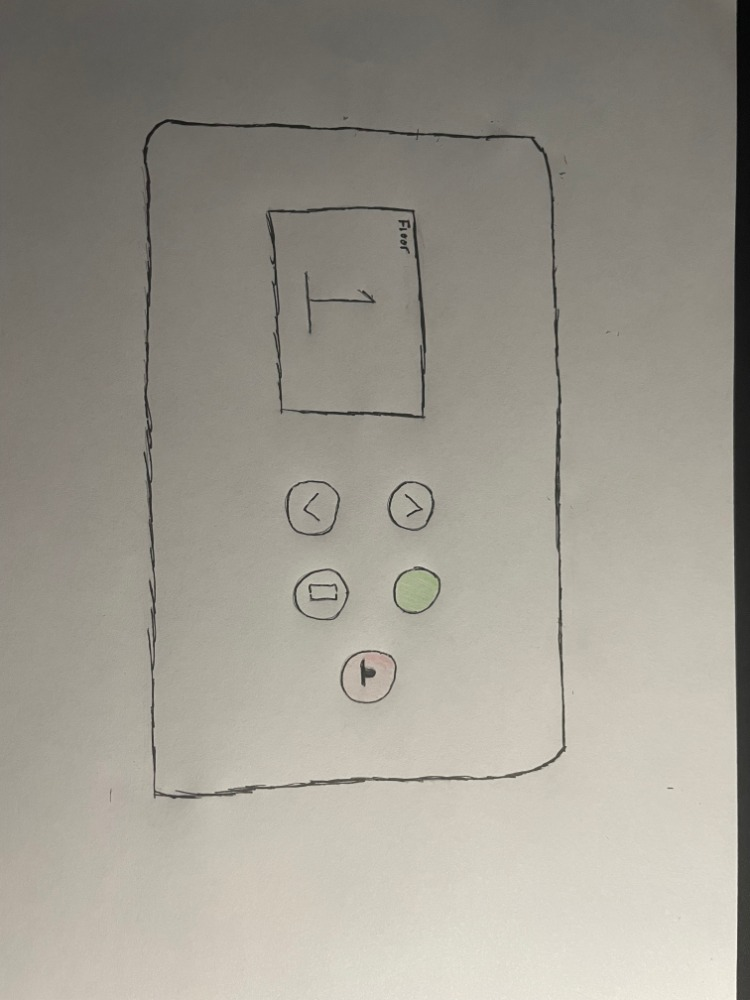

C
General Features
Below is my sketch that will represent a smart mirror. You will have options to check the weather in your area,
the time according to your timezone, a personalized calendar filled with that days tasks, news feed to keep up with the news
while you get ready, and also twitter feed that shows whats trending.
Health Features
There will also be a section
for your health, this will include how much sleep you got, a random exercise to do for the day, and also a scale. The sleep timer will
go off of your phone alarm and the time you fall asleep, it will subtract that from the alarm and tell you how many hours you have slept
throughout the night. The scale feature will work by having a scale below the mirror and it will store that information on the mirror, it will update
everytime you step on the scale and keep track of your weight for one week.
B
Below is the sketch in p5.js
General Information
The General information can be found on the left side of the mirror, this includes a personalized calender, news feed from New York Times, and Local weather. Time will always be displayed unless the news app opens up because it will take up most of the screen.
Solution and New Design

A
Simple yet effective, the new design will include a screen that will display floor level at the top of the door.
The control panel will consist of 5 buttons and a screen that will display destination level.
User will use up and down button to choose floor level and hit green button to go to desired floor.
The reason for this is because it will allow for a clean interface and it will be easy to comprehend, using the up and down arrows
will allow the user to pick a desired floor, after a couple seconds of being on that number the door will automatically close
or they can click the green button to speed up the process. This will eliminate the close door button, depending on how
tall the building is, it will eliminate a set amount of buttons.
This can be made with a touch screen if desired, or just simple buttons, both will have the same functions but one will look modern.
The screen will be about 8" tall and 14" wide, The reason for this is because the screen doesnt have to be large in order to fit
5 buttons and a number. The feedback for this will be a speaker announcing "Going Up", or "Going down",
depending on what the user selects. Like the previous design, the buttons will also light up red allowing the user
to know that it has been pressed.
· People with disabilities will be able to use the elevator, making it bigger than a normal elevator you can comfortably fit someone
on a wheel chair. Also by adding brail to the buttons on the non touch screen, it will allow blind people to use it.
Design

Design Options
E
Disabilities & Extras
· An information screen can be brought up by clicking a series of buttons that will display the maintence info and anything important that can be needed.